Malaysia Trav-E-Logs ©
Marudi, Sarawak
| 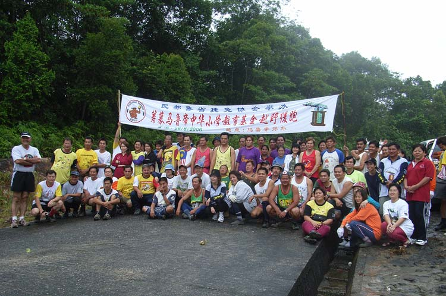 | |
| back: Brunei Holiday | Bintulu HHH at Marudi Charity Run. |
================================= While waiting at a bus stop along a rural highway in Sarawak State, Borneo for the next bus to Bintulu, a pickup truck going the other way stops in the middle of the road and calls out if I want to go on a hash. "What's a hash?" is my reply. "Are you on a fixed schedule?", he counters. "No," I reply. "Hop in -- you'll get to Bintulu in a couple of days" is his reply. =================================
August 26 - 27, 2006
|
Crossed the street to put my big pack in the bed of the 5-passenger Toyota pick-up, then hopped in the back seat. We introduce ourselves; the driver is Ambrose Chung, living in Sibu on the weekends with his wife -- his three children are emancipated. During the week he manages a large oil palm development operation near Bintulu. Riding shotgun is Polo, ethnically Iban, from the upriver community of Kapit. Polo recently went to work for Ambrose. This will be his second hash. Our ultimate destination is Marudi, a town just recently connected to the highway by a dirt and sand logging road. In the past, access was only by a very long boat ride up the Batang Baram River from Kuala Baram on the South China Sea. Fifteen minutes up the highway, we pull off at a dirt road leading into Borneo's interior. Here we join more than half a dozen vehicles . . . all heading to the Marudi hash site. Several drivers are recognized as having told me I was going "the wrong way" while waiting for the bus. "Ambrose asked the right question" was my response when asked why I didn't go with them. Ambrose explains this will be the first "hash" ever in this location, and a very special charity hash, as funds are being raised for two projects in Marudi to benefit the school system. The hash is also special for him, as this town was his first assignment as Chief of Police, shortly after he finished his training. Yes, Ambrose is now working his second career, as he retired from the police force several years ago. Leaving the highway, Polo takes the wheel, as he has much experience driving on logging roads. Not only is it an unimproved roadbed, with pot holes, ruts, and soft sand in places, but as you twist and turn through the hills and valleys, little arrow signs posted or painted on rocks on either side of the road indicate which shoulder to hug when going over or around blind curves and hills! Traveling at speeds up to 60 kph under these conditions makes you appreciate the skill of the driver. These strange driving rules are necessary to facilitate the long logging trucks as they strain to deliver their loads to the mills. For what seems like half an hour, the countryside is mostly planted in oil palms, much of it just one to three years old. That has to be the ugliest time to see these newly planted lands, as the scars of clear-cut logging followed by bulldozer terracing are pervasive. Your eyes actually scream to see older palm oil plantations, as at least then you see a variety of parasitic plants clinging to the palm tree trunks. Another 30 minutes passes and the road leaves the hills behind and enters a large plain. Ambrose acknowledges that this area is subject to flooding during the rainy season. The road makes an abrupt stop at a river, and we take turns crossing on a cable ferry, six to eight vehicles at a time. A merchant also crossing is transporting durian, so I purchase three of them and share with my new friends. The Toyota is covered in dust and sand, as we were not the lead vehicle. Each time the truck stops, the opportunity is used to stretch our legs. My camera snaps a few photos of the local vegetation. Another 30 minutes driving over mostly sandy roads and we reach a second, much larger river. On the other side, the road soon turns to blacktop, and Ambrose announces we have reached Marudi. Not what I expected -- a town in the Borneo interior with multistoried hotels, lots of concrete structures -- and remarkably clean as well. The "hashers" are obviously welcome, as people are waving and happy to see the influx of noisy traffic into town. After checking into the hotel, the 15 to 20 vehicles convoy around town and meet at the City Park where an area has been designated for us. The planning committee has done its homework. After registration, which includes an event tee shirt, we are told when and where to meet for the hash run. With over an hour of free time, the three of us grab a bite to eat, then take a nostalgic walk around town. Many, many people recognize Ambrose, and it is obvious he is both respected and well liked. He points out the "polis barracks". We walk up the hill to a park overlooking the town and find the foundation where his home used to be. More folks greet Ambrose, and we meet others in a "teh hous." Even the weather is great -- not too hot, partly cloudy. At 4 PM we meet for convoy to the hash site. It's time to wear the Marudi Hash Tee. Circling the town seems to be a ritual, then a 15-minute drive to a designated parking area for the hash. One of the hashers brings over a large pitcher plant for display and photographing; two varieties seem to populate the many patches in this area. Soon the sign-in sign-out book appears, and we all make our initials. Everyone gathers for a group shot, as this is a special event. It's getting cloudy. At 4:30 the run starts. The organizers are called hares, while the rest of us are hounds. The hares have tied red-white ribbons on trees through the jungle. Their plan was to mark a course for the fastest runners to complete in a little over half an hour, while the slower hounds may take about an hour to finish. The course is not on paths, but up and down steep hills, across streams, and occasionally up, up, up steep muddy banks covered with all the jungle has to offer. At this time in the afternoon, it is not always easy to see the ribbons as it is rather dark under the forest canopy and I suspect a light rain is falling, which keeps temperatures down. The first eager runners have unwittingly destroyed some of the markers, so the course has its trying moments. And similar to a real hounds cry, On-on (pronounced "Own-own") is the cry of these ad-hoc hounds. At the top of a very steep, muddy, long climb, the trail punches out of the jungle onto sheer rock; others tell me this is the end. We work our way down to the roadway and follow it back to our starting point. A mountain spring is at hand to help with cleaning the mud and dirt off my arms and legs. More pitcher plant patches are noted, a smaller variety than the two by the parking area. Back at the starting point cold drinks (including beer) and snacks are being passed out. True to their mottoes: Runners with a drinking problem -- No Hare, No Run, No Beer, No Fun. The organizers announce that all hounds have returned, about the time it started sprinkling again. Perfect timing, as the clouds have kept the temperatures down to about 80F. What more could one ask for? One by one people pack up and leave, many saying "see you tonight." Back at the hotel, we take turns showering and getting ready for the banquet. Sure glad I have the full pack with all my clothes! Ambrose tells me its customary to wear a hash tee to the banquet, so he lends me one from a prior run. It's a XXX-Large, but clean. The banquet is a short walk down the street, a great idea considering all the beer that will be consumed over the next few hours. The food is superb, with course after course delivered Chinese style to the center of the table. Prawn, fish, squid, chicken, deer, beef, pork, soup, tofu, and vegetable dishes, all prepared in delightfully different ways. Beer, water, teh to drink. Hard to believe these folks aren't all overweight! But then again, this is a special charity hash, and the first hash in Marudi. About an hour after the feast began, the music is turned down and an emcee takes the mike. Two large checks are presented to the town's school board. Introductions are made, and then the toasting begins. First to the organizers, the hares, the chairperson, the sponsors. Then to the first to complete the run, to he who found the first pitcher plant, the first to arrive by car, to those on their first hash, the person furthest from home etc. Get the picture? Then the games start, with the winners having to down more. I collect another souvenir -- a nice towel embroidered with both the Hash House Harrier and Marudi logos, and the event date. Yes, it's a very good thing no one drives home. By 10:30 most have left to get a good night's sleep. The next morning we meet above the municipal market for breakfast -- mostly "kopi or teh" and toast with a very sweet fruit spread. At 8 AM the hashers meet for short formalities including photos. Then we start another fun run in town, ending at a schoolyard in less than 10 minutes for the fastest runners. Fantastic experience -- a bunch of folks that like to run/walk in the woods/jungle, and drink a few suds too. It's quit the social club, and was actually started in Malaysia by a few bored British colonial officials in 1938. It is now worldwide -- do a Google search for Hash House Harriers in your neck of the woods. Looks like they just had an International event in the North of Thailand about July 1, 2006. Question: When was the last time you let a stranger talk you into going the other way? To be continued . . . ! |
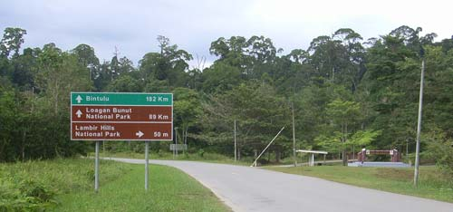 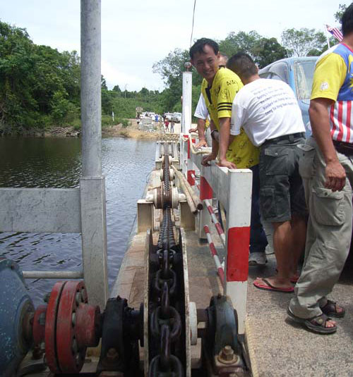 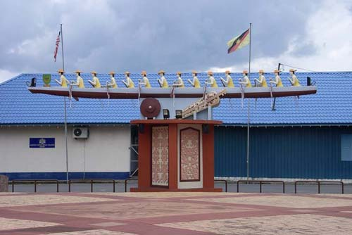 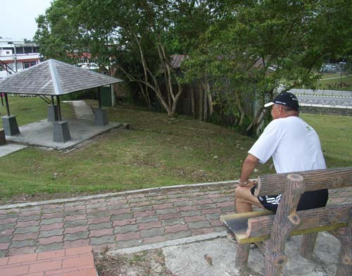 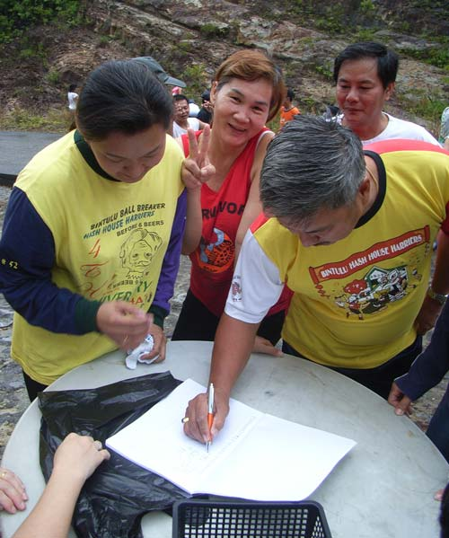 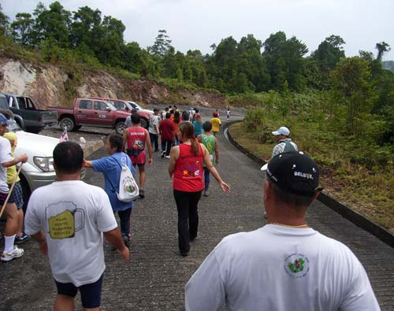 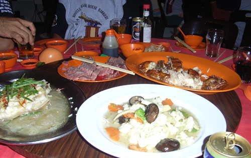 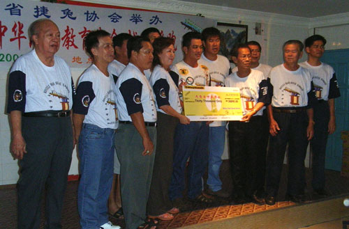 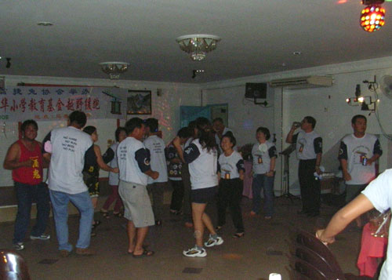 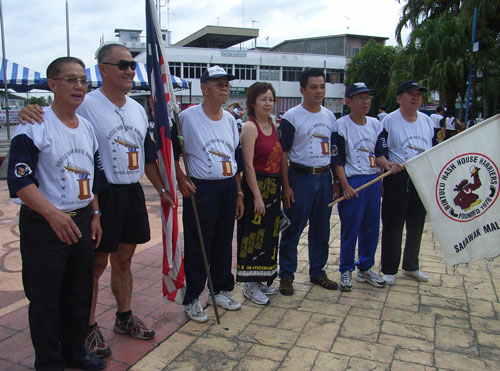 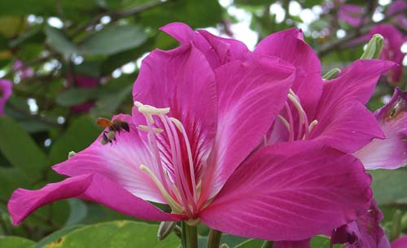 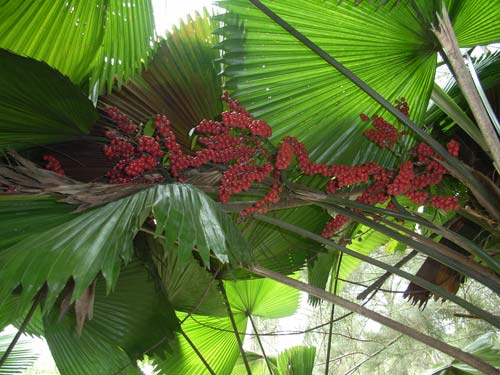 |
Bill
------------------------------
Email me at: "juno.com" preceded by an "@" and "dancer2SEAsia"
"Travel is Fatal to Bigotry, Prejudice, and Narrow-minded ness" .... attributed to Mark Twain
| jump to: Manila | soon: Sibu |
| back: Brunei Holiday |